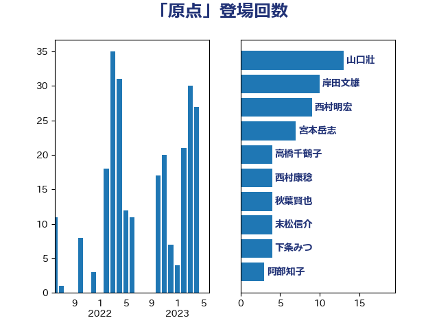

単語「原点」

| 山口壯 | 自由民主党 | 13 回 |
| 宮本岳志 | 日本共産党 | 7 回 |
| 中川正春 | 立憲民主党 | 5 回 |
| 岸田文雄 | 自由民主党 | 5 回 |
| 上川陽子 | 自由民主党 | 4 回 |
| 下条みつ | 立憲民主党 | 4 回 |
| 倉林明子 | 日本共産党 | 4 回 |
| 川田龍平 | 立憲民主党 | 4 回 |
| 末松信介 | 自由民主党 | 4 回 |
| 石井苗子 | 日本維新の会 | 4 回 |
| 紙智子 | 日本共産党 | 4 回 |
| 野上浩太郎 | 自由民主党 | 4 回 |
| 山岸一生 | 立憲民主党 | 3 回 |
| 山崎誠 | 立憲民主党 | 3 回 |
| 岸信夫 | 自由民主党 | 3 回 |
| 松野博一 | 自由民主党 | 3 回 |
| 鈴木貴子 | 自由民主党 | 3 回 |
| 高橋千鶴子 | 日本共産党 | 3 回 |
| 高良鉄美 | 無所属 | 3 回 |
| 上月良祐 | 自由民主党 | 2 回 |
| 下野六太 | 公明党 | 2 回 |
| 串田誠一 | 日本維新の会 | 2 回 |
| 丸川珠代 | 自由民主党 | 2 回 |
| 古賀友一郎 | 自由民主党 | 2 回 |
| 塩川鉄也 | 日本共産党 | 2 回 |
| 守島正 | 日本維新の会 | 2 回 |
| 小泉進次郎 | 自由民主党 | 2 回 |
| 山下芳生 | 日本共産党 | 2 回 |
| 岸真紀子 | 立憲民主党 | 2 回 |
| 柚木道義 | 立憲民主党 | 2 回 |
| 櫻井周 | 立憲民主党 | 2 回 |
| 田嶋要 | 立憲民主党 | 2 回 |
| 舟山康江 | 国民民主党 | 2 回 |
| 若林健太 | 自由民主党 | 2 回 |
| 赤嶺政賢 | 日本共産党 | 2 回 |
| 赤羽一嘉 | 公明党 | 2 回 |
| 逢沢一郎 | 自由民主党 | 2 回 |
| 野田佳彦 | 立憲民主党 | 2 回 |
| 鈴木庸介 | 立憲民主党 | 2 回 |
| おおつき紅葉 | 立憲民主党 | 1 回 |
| 上野通子 | 自由民主党 | 1 回 |
| 中島克仁 | 立憲民主党 | 1 回 |
| 井上哲士 | 日本共産党 | 1 回 |
| 井上貴博 | 自由民主党 | 1 回 |
| 佐々木さやか | 公明党 | 1 回 |
| 加田裕之 | 自由民主党 | 1 回 |
| 吉田統彦 | 立憲民主党 | 1 回 |
| 和田有一朗 | 日本維新の会 | 1 回 |
| 嘉田由紀子 | 無所属 | 1 回 |
| 国定勇人 | 自由民主党 | 1 回 |
| 室井邦彦 | 日本維新の会 | 1 回 |
| 宮崎政久 | 自由民主党 | 1 回 |
| 寺田静 | 無所属 | 1 回 |
| 小沢雅仁 | 立憲民主党 | 1 回 |
| 小野田紀美 | 自由民主党 | 1 回 |
| 尾辻秀久 | 無所属 | 1 回 |
| 山口那津男 | 公明党 | 1 回 |
| 岡本あき子 | 立憲民主党 | 1 回 |
| 川崎ひでと | 自由民主党 | 1 回 |
| 市村浩一郎 | 日本維新の会 | 1 回 |
| 平木大作 | 公明党 | 1 回 |
| 志位和夫 | 日本共産党 | 1 回 |
| 新藤義孝 | 自由民主党 | 1 回 |
| 末松義規 | 立憲民主党 | 1 回 |
| 本田顕子 | 自由民主党 | 1 回 |
| 松川るい | 自由民主党 | 1 回 |
| 枝野幸男 | 立憲民主党 | 1 回 |
| 柴田巧 | 日本維新の会 | 1 回 |
| 梶山弘志 | 自由民主党 | 1 回 |
| 榛葉賀津也 | 国民民主党 | 1 回 |
| 横山信一 | 公明党 | 1 回 |
| 櫛渕万里 | れいわ新選組 | 1 回 |
| 江田憲司 | 立憲民主党 | 1 回 |
| 沢田良 | 日本維新の会 | 1 回 |
| 津島淳 | 自由民主党 | 1 回 |
| 浅田均 | 日本維新の会 | 1 回 |
| 浜野喜史 | 国民民主党 | 1 回 |
| 渡辺博道 | 自由民主党 | 1 回 |
| 片山さつき | 自由民主党 | 1 回 |
| 玉木雄一郎 | 国民民主党 | 1 回 |
| 田村貴昭 | 日本共産党 | 1 回 |
| 石井正弘 | 自由民主党 | 1 回 |
| 石井準一 | 自由民主党 | 1 回 |
| 石田昌宏 | 自由民主党 | 1 回 |
| 荒井優 | 立憲民主党 | 1 回 |
| 菅義偉 | 自由民主党 | 1 回 |
| 藤木眞也 | 自由民主党 | 1 回 |
| 西銘恒三郎 | 自由民主党 | 1 回 |
| 進藤金日子 | 自由民主党 | 1 回 |
| 野田聖子 | 自由民主党 | 1 回 |
| 金村龍那 | 日本維新の会 | 1 回 |
| 金田勝年 | 自由民主党 | 1 回 |
| 鈴木淳司 | 自由民主党 | 1 回 |
| 長坂康正 | 自由民主党 | 1 回 |
| 阿部弘樹 | 日本維新の会 | 1 回 |
| 阿部知子 | 立憲民主党 | 1 回 |
| 青柳陽一郎 | 立憲民主党 | 1 回 |
| 高橋光男 | 公明党 | 1 回 |
| 高橋克法 | 自由民主党 | 1 回 |
| 齋藤健 | 自由民主党 | 1 回 |